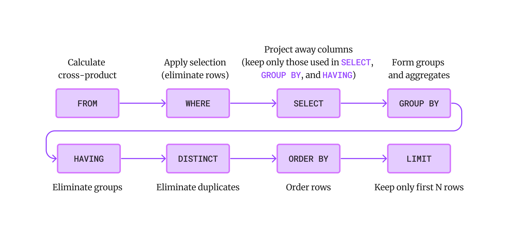

Basic queries
SELECT [DISTINCT] <column-expression>
FROM <table>
[WHERE <predicate>]
- Produces all tuples that satisfy the predicate.
- Outputs the expressions in the
SELECT list.
-
Expressions can be column references, or an arithmetic expressions.
Uniqueness
SELECT DISTINCT colors
FROM Boats;
DISTINCT removes duplicate rows from the output.
String comparisons
SELECT sname
FROM Sailors
WHERE sname LIKE 'A%'
SELECT sname
FROM Sailors
WHERE sname REGEXP 'A.*';
- These two queries are equivalent.
Order
SELECT sname, age
FROM Sailors
ORDER BY sname;
-
ORDER BY specifies that the rows should be ordered
lexicographically.
- It must refer to columns that are in the output.
Ascending or descending
SELECT sname, age
FROM Sailors
ORDER BY age ASC, sname DESC;
- Ascending order is used by default.
-
DESC and ASC can be used to change the
order.
- Can mix and match.
Limit
SELECT sname, age
FROM Sailors
ORDER BY age
LIMIT 5;
-
LIMIT specifies the maximum number of rows to output.
-
Typically used with
ORDER BY, otherwise the output is
non-deterministic.
Aggregates
SELECT AVG(age)
FROM Sailors;
- An aggregate computes a summary of some arithmetic expression.
- It produces one row of output.
-
Other aggregates:
SUM, COUNT,
MAX, MIN.
Column names
SELECT AVG(age) AS "age average"
FROM Sailors;
Groups
SELECT age, AVG(rating) AS "rating average"
FROM Sailors
GROUP BY age;
-
GROUP BY partitions the output into groups with the
same column values.
- It produces an aggregate result per group.
Filtering groups
SELECT age, AVG(rating) AS "rating average"
FROM Sailors
GROUP BY age
HAVING COUNT(age) > 1;
- The
HAVING predicate filters groups.
- It is applied after grouping and aggregation.
- It can only be used in aggregate queries.
Distinct aggregates
SELECT COUNT(DISTINCT age)
FROM Sailors;
SELECT DISTINCT COUNT(age)
FROM Sailors;
- These two queries are not equivalent.
Table aliases
SELECT S.sname, S.age
FROM Sailors S
WHERE S.age > 30;
Conceptual evaluation strategy
